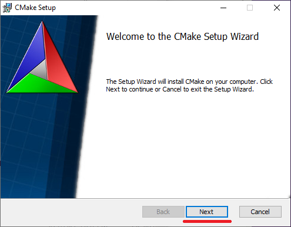
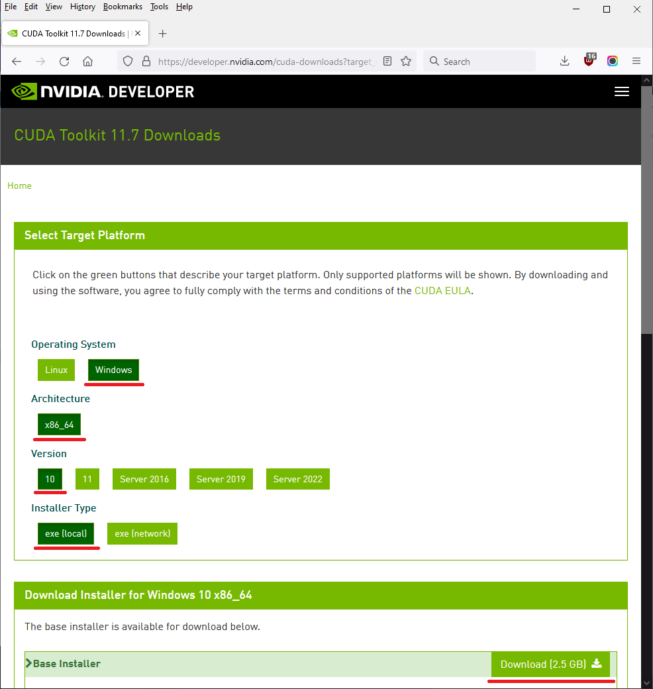

Creating Volumetric NeRFs
The motivation for writing this content is to illustrate and describe approaches that can be used to create volumetric NeRF representations of environments. NeRF stands for a neural radiance field which is an alternative way to describe a scene compared to datatypes like meshes, point clouds, voxels, lightfields, or MultiSphere/MultiPlane media.
This year NVIDIA released a project called Instant NGP (Neural Graphics Primitives). Among other achievements it dramatically speeds up the process of training a NeRF scene by several orders of magnitude compared to prior techniques developed between 2020-2021.
Previously this NeRF performance bottleneck issue was a significant blockage for the further adoption and refinements of NeRF concepts from both a technical and creative perspective.
NeRF Video Snapshots¶
Here are several short video clips that give an impression of what it's like to explore a NeRF scene using the Instant NGP repository's TestBed program.
This video shows an orbit of the camera around a lion sculpture.
NeRF Instant NGP | TestBed | Lion Orbit
This video shows the effect of the "Crop aabb" control. It allows you to perform 3D bounding box region cropping operations of the NeRF scene.
NeRF Instant NGP | TestBed | 3D Cropping
When you zoom out to the edge boundary zone of a NeRF scene you start to see floaty blobs that look a bit like fluffy/cloudy artifacts. Although it's not an officially used NeRF term, as far as I know, I like to call these glitches "Neural Foam" artifacts.
NeRF Instant NGP | TestBed | Cloudy Neural Foam Artifacts on Scene Boundary
The NVIDIA Instant NGP library is very fast at performing NeRF model training and refinement. This clip captures the viewport from the moment the TestBed program is launched until the lion sample scene is refined to a point that is enjoyable to explore interactively in 3D.
NeRF Instant NGP | TestBed | Model Training
Equipment Needed to Explore Instant NGP¶
Hardware Required¶
- Windows or Linux based PC
- 64 GB+ System RAM
- NVIDIA RTX 2000 or 3000 Series GPU
Software Required¶
To run NeRF based workflows on your system you will need the following tools:
 Python 3.10.4
Python 3.10.4 Microsoft Visual Studio 2019 Community Edition
Microsoft Visual Studio 2019 Community Edition Git Client
Git Client NVIDIA GPU Driver
NVIDIA GPU Driver- NVIDIA CUDA Toolkit 11.6
- NVIDA OptiX 7.3
- NVIDIA Instant NGP
 CMake v3.23.1
CMake v3.23.1 Colmap 3.7
Colmap 3.7 openCV-Python
openCV-Python Numpy
Numpy OpenEXR
OpenEXR NotePad++
NotePad++ FFMpeg
FFMpeg
Use of Conda, Rez, whatever...
I'm avoiding discussing the topic of virtual environments like Conda in this guide in an effort to keep things focused primarily on the NeRF centric steps required. If you are comfortable with Conda or other virtual environments like Rez, feel free to bring that knowledge to play when you follow along at home.
Example NeRF Instant NGP Dataset¶
Lion Sculpture @ Sir Sandford Fleming Park, Nova Scotia aka. "The Dingle" Park
> Nerf_instant_ngp_lion.zip (118 MB / 36 images)
Build Instant NGP¶
The following sections decribe how to setup an environment to build Instant NGP
Step 1. Install Python¶
Download and install the 64-bit version of Python 3.10.4 by clicking on the "Windows Installer (64-bit) link on the Python Release page.
To make things simpler for command prompt usage, in the Python installer, enable the checkbox to add Python to the system PATH.
We also want to override the install folder so Python is installed to C:\Python310\. This is achieved by changing the "Customize install location" text field contents to "C:\Python310\".
Click the "Install" button to complete the Python install process.
After Python 3.10.4 is installed, open a new Windows Command Prompt in administrator mode.
This is done by clicking on the start menu. Then start typing in the word "command" and autocomplete should filter the list of programs down to Command Prompt. Select the "Run as administrator" entry on the right side of this view.
In the command prompt window run the Python 3 version of the pip installer to add Numpy and OpenCV support.
Numpy is installed using the command prompt window by typing in:
pip3 install numpy
Then OpenCV is installed using the command prompt window by typing in:
pip3 install opencv-python
Wrong Screenshot
This is not an opencv-python install, but the numpy screenshot. Double checke: It has already been in the (Scrvener) source file.
Command Prompt Tip: If you have copied a line of text you want to run into your clipboard copy buffer, in Windows 10, you can paste that text directly into the Command Prompt window by right-clicking in that view.
Press enter to run the recently pasted in shell command.
In order to use OpenEXR formatted images with Python and the testbed program we need to add the OpenEXR library.
Download and install the OpenEXR supporting libraries for Python from:
https://www.lfd.uci.edu/~gohlke/pythonlibs/#openexr
Since we are using Python 3.10.4 we want to select the OpenEXR library that has "CP310" in the filename: "OpenEXR-1.3.2-cp310-cp310-win_amd64.whl".
We can cut down the amount of time needed to scroll through that long webpage by copying the text "OpenEXR-1.3.2-cp310-cp310-win_amd64" into your clipboard.
Then hit the Control+F shortcut to open your web-browser's "Find" dialog.
Paste in the text from your clipboard and the webpage view will be paged down directly to that line. Click on that highlighted .whl file to download it.
Python PIP Tip: A .whl file is known as a Python "Wheel" package. This format is a convenient way to install extra Python libraries.
The .whl file can be installed by changing the Command Prompt's current working directory to your user account's "Downloads" folder.
Then we run the pip installer command with the filename of the local .whl package file specified:
cd %HOMEPATH%\Downloads
pip3 install OpenEXR-1.3.2-cp310-cp310-win_amd64.whl
Step 2. Install Visual Studio + CMake¶
Download Microsoft Visual Studio 2019 Community Edition. This is a C++ development environment that lets us compile programs. The community edition release is free to download and use at home.
To access the 2019 release of Visual Studio, expand the "2019" heading on the left side of the webpage. Then click the "Download" button.
Because Visual Studio is made by Microsoft, you will need to login to the site with a Microsoft/Skype ID credential to access this download. This page will likely want to use 2-factor authentication if you aren't already logged in beforehand.
The exact version of the download is currently listed as "Visual Studio Community 2019 (version 16.11)" as of 2022-05-12. We are going for an x64 (64-bit) .exe download of a Multi Language release.
Clicking the "Download" button will download a 1.4 MB sized web-installer program that is named "vs_Community.exe".
When the vs_Community installer launches you will be presented with a dialog that lists Microsoft's license terms. Click the "Continue" button to proceed.
The installer will then download a list of available Visual Studio packages you can add to your system. This takes a few moments to complete on a fast internet connection.
We only need to choose one option in this screen for our project today. In the main part of the view click on the large tile on the lower right area that is labelled "Desktop development with C++". The default installation entries that are pre-selected are fine for our needs. Click the "Install" button to continue.
This Visual Studio Community 2019 install is estimated to use about 8 GB of disk space. It will take a while to finish. At this point in the tutorial you can take a short break while the progress bar is working its way across the screen towards 100% completion.
When this dialog appears on your screen you'll know that Visual Studio 2019 is fully installed.
A Microsoft login prompt window will appear which allows you to launch Visual Studio and keep it up-to-date. This dialog is asking for your Microsoft / Skype login credentials to go to the next step.
After you click the "Sign In" button a 2-factor login dialog will appear. Click the "Send code" button to have a numerical 2-factor code sent automatically to your registered email address.
The single-use code should arrive in your email inbox in a few seconds.
With all of that taken care of we are now brought to the Visual Studio 2019 landing page view for the program. Click on the top-right corner of the window's "X" icon to close the view. This should quit Visual Studio and let us carry on further with the next step.
With Visual Studio installed, the next stage of the compiling software puzzle is to add a free utility called CMake.The CMake tool helps create "makefiles" which are used to prepare the computer-specific parameters for each of the supporting resources and libraries that a compiler requires to convert source code into executable software.
Go to the CMake website and download v3.212.1 (or the current newest release). The CMake installer we want to use for a 64-bit version of Windows comes in an .msi format which is a self-running installer package format.
To access this file, scroll down on the CMake Download page to the heading "Latest Release". Click to download the Binary distribution of the Windows x64 installer.
The current file (as of 2022-05-12) is named "cmake-3.23.1-windows-x86_64.msi". The installer file is 27.9 MB in size.
Run the CMake installer. On the first screen click the "Next" button to continue.

On the "End-User License Agreement" screen you need to enable the "[x] I accept the terms in the License Agreement" checkbox. Click the "Next" button to continue.
On the "Install Options" screen if your computer is used by a single user, then you likely want to select the "(x) Add CMake to the system PATH for the current user" entry. Click the "Next" button to continue.
On the "Ready to install CMake" screen, click the "Install" button.
When the installer finishes we can exit it by clicking the "Finish" button.
The CMake installer provides a command line program, along with a visual user interface that can be launched from the start menu called "CMake (cmake-gui)".
Step 3. Install NVIDIA CUDA Toolkit and OptiX¶
Next we need to download the NVIDIA CUDA Toolkit 11.6 and NVIDA OptiX 7.3 installers. You will need to register for a free NVIDIA Developer Program account to download the Optix library.
The CUDA Toolkit is used to create compiled software that is able to take advantage of NVIDIA CUDA based GPU acceleration.
On the CUDA Toolkit 11.7 Downloads page, set the "Operating System" to "Windows". Then pick the default "x86-64" architecture. The "Version" control relates to your Windows OS version which in my case is Windows 10 so I would select "10". The "Installer Type" should be "exe (local)" for most users needs.
Finally in the "Download Installer for Windows 10 x86-64" section of the page, scroll down to the "Base Installer" heading and click on the "Download (2.5 GB)" button.
The file I downloaded was named "cuda_11.7.0_516.01_windows.exe". The specific version number will change over time. The installer download might take a few minutes to complete since it is 2.5 GB in size.

When you run the NVIDIA CUDA Toolkit installer you need to agree to the license terms to continue.
For most users the "Express (Recommended)" install option is the best choice. Click "Next" to continue.
Note: The "Express (Recommended)" setting will also change the current NVIDIA display driver version. If you need to preserve your current display driver version then you might want to explore the "Custom (Advanced)" install option.
The NVIDIA CUDA Toolkit installation will start after a few moments.
A NVIDIA Nsight Visual Studio Edition Summary screen will appear. Clicking the "Next" button will advance the installer to the final screen.
At this point the NVIDIA CUDA Toolkit installer is finished and you can exit the program by clicking the "Close" button.
The OptiX library is used to allow the Visual Studio compiler to support building source code that relies on NVIDIA RTX GPU driven raytracing and interactive image denoising.
On the "NVIDIA OptiX Downloads" page, scroll down to the "Optix SDK 7.4.0 - (Windows, Linux, and ARM)" section. Click on the green "Windows 10, 64-bit Accept & Download" button to continue.
As mentioned previously, you will need to register for a free NVIDIA Developer Program account to download the Optix library. This takes only a few moments to complete.
If you need to register for a new account click the "Join Now" button. Otherwise, if you have an existing account click the "Login" button to continue. NVIDIA uses a 2-factor login system for this site so you will have to check your email for the login code and click the "Verify Email Address" button to proceed.
The OptiX installer file "NVIDIA-OptiX-SDK-7.4.0-win64.exe" was a 53.5 MB download.
On the first screen of the installer you need to click the "Next" button to continue.
On the "License Agreement" screen you need to click "I Agree" to continue.

The next few screens just require you to keep on clicking "Next" unless you feel the need to customize the settings.
To start the installation process click the "Install" button.

When the OptiX SDK installation process completes you can exit the installer by clicking on the "Finish" button.
Step 4. Clone the Instant NGP Repository¶
Git is a technology that is frequently used to interface with online source code repositories like GitHub and GitLab. Git based software tools help with essential version control tasks during software development which is something that allows a team of programmers to work together effectively on the same project.
This step in the tutorial assumes you don't already have a favourite git client like Git-Tower, or GitKraken, etc. installed on your system.
We are now going to install a free open-source, command prompt based, git program by downloading and installing the Git Client tools. On the Git-SCM website's Download page, select the "Windows" option.
We are interested in downloading the Standalone Installer called "64-bit Git for Windows Setup". The installer is 47.3 MB in size and currently has the filename of "Git-2.36.1-64-bit.exe".
On the Git installer's "Information" screen you have to accept the GNU GPL license terms by hitting the "Next" button.
Most of the subsequent screens in the git installer can be navigated through without too much attention by leaving things pretty much at their default values and clicking the "Next" button each time.
You have the option of customizing the installed components.
You are able to configure the default text editor that is used by git. There are several options you can choose from the list.
As previously mentioned the default settings that are pre-selected for most of these screens are fine for the average user just getting started with git.
Since we want to be able to use the command line git utility from the Command Prompt window it is a good idea to select either the 2nd or 3rd options in the "Adjusting your PATH environment" screen.
Personally, I think the 2nd option of "(x) Git from the command line and also from 3rd party software" is the most balanced and flexible choice for new users.
You can click the "Next" button on all remaining git installer screens to complete the process.
Let's try out the git program for the first time! We are now ready to launch a Windows "Command Prompt" window with administrative permissions using the start menu.
With the command prompt window open, lets type in:
cd \\
git clone --recursive https://github.com/nvlabs/instant-ngp
cd instant-ngp
dir /w
These commands will launch the git utility and it should automatically download the current version of the NVIDIA Instant NGP (Neural graphics primitives) source code from the GitHub website and save it to the root folder on the C:\ drive at the folder path of "C:\instant-ngp\".
Git Usage Note: You have the freedom to customize this git cloning download path but for convenience the shorter the filepath, the easier it is to access from a command prompt session when you go to run the testbed program later on. Also keep in mind that there is a limit to the length of a typical folder path on a default Windows system so if you download the files into a custom location of your own choosing and it happens to be a deeply nested hierarchy, you might be causing yourself trouble later on.
Git Troubleshooting Tip: If you see an error message about git not being found in your system's PATH variable, you can double check things by typing the following text into the command prompt window. This will list the current contents of the PATH environment variable:
echo %PATH%
Hopefully in this long list of folders that is separated by semi-colon characters you will spot an entry for "C:\Program Files\Git\cmd"
Git Troubleshooting Tip: We needed to use the Command Prompt with Administrative permissions in order to be able to download the Instant NGP files into the root folder on the C:\ drive. If you do not have administrator permissions you could still follow this tutorial but instead would have to download the files to a location like a folder inside your user account's home folder.
With the git downloading phase complete you should be able to navigate using the Windows Explore folder browsing view to open up the instant-npg folder. The path we installed the files to by default was "C:\instant-ngp\".
Step 5. Building Instant NGP¶
Install COLMAP¶
COLMAP is a free cross-platform open-source camera alignment and photogrammetry (image based modelling) toolset. COLMAP is used by the Instant NGP python scripts to prepare the NeRF camera data before the training task is started.
Download Colmap 3.7 from the GitHub releases page as a pre-compiled Windows binary that has NVIDIA CUDA GPU acceleration enabled. This download is currently named "COLMAP-3.7-windows-cuda.zip" and is 129 MB in size.

Expand the zip archive and copy the expanded COLMAP folder to the root of your hard disk. Let's rename the COLMAP folder at the same time for easier command line usage. Change the folder name from "C:\COLMAP-3.7-windows-cuda\" to a shorter and simpler version by reducing the folder name down to merely "C:\COLMAP-3.7\".
Make sure to avoid installing COLMAP to a folder that has a space in the filepath or the Colmap unit tests will fail. This will occur if you placed COLMAP inside your home folder and your user account name has spaces between your first and last name. I repeat, spaces in the path will cause you headaches if you ignore this suggestion!
Next we are going to add COLMAP's "bin" and "lib" folders to the system PATH environment variable using the Windows based System Control Panel.
Power User Tip: It is worth mentioning now that if your Windows computer has complex dependencies caused by having several different versions of large DCC programs / development tools installed at the same time, along with several different Python versions installed concurrently too, and you use virtual environments as well, please feel free to customize this process to meet your needs.
Click on the Windows Start menu. Then begin typing in the words "View advanced system settings" in the search dialog's text input area. By the time you've typed in the 2nd word the Start menu will likely have finished auto-completing the full text.
Click the "Open" text based link on the right-side of the view to launch this Control Panel.
In the System Properties window click on the "Environment Variables..." button. This dialog is where custom environment variables like the system PATH are configured.

In the "Environment Variables" window click on the "System Variables > Path" entry. Then click the "Edit" button. This will allow us to customize a version of the PATH variable that is used for all user accounts and background system processes, too.
In the "Edit environment variable" window click the "New" button to add an additional entry. Type in "C:\COLMAP-3.7\bin\".
Click the "New" button again and add a "C:\COLMAP-3.7\lib\" entry as well. This will add the COLMAP .dll library files to the system PATH as well.
This process will make the executables and libraries used by the COLMAP program easier to run from the command prompt without having to type in the full absolute path to each .exe file each time.
If you wanted to get fancy one could spend more time down the road and customize other parameters like a QT_PLUGIN_PATH environment variable, too... but for our needs right now it is not required.
Click the "OK" button to close this window. Then close the subsequent other Control Panel windows by clicking their "OK" buttons as well.

Environment Variables Tip 1: The "PATH" variable, which is written as %PATH% when accessed from the command prompt window, is used for several purposes. One of those use cases is to define which executable programs on your computer (.exe, .bat, etc files) can be run from a terminal session simply by typing in the program's base filename name without having to always write in the full folder path to the program. This saves a lot of time when a user frequently navigates a filesystem hierarchy in a text based command prompt/terminal window and runs a series of command line tools.
Environment Variables Tip 2: An environment variable can be thought of as a system wide preference that any program that is started is able to read. An environment variable is a technique that system administrators will often use to customize the operating environment that software runs inside of on a workstation or render node. This concept of customizing environment variables allows you to pass a common set of preferences to multiple executable programs in a consistent way. It helps inform software of the custom values you might want to define system wide and avoids using hard-coded fixed settings in each application. It is possible to read environment variables inside of just about every general purpose programming language or scripting language like C, C++, C#, Python, Lua, Perl, PHP, Batch, and BASH/ZSH, etc.
Build the TestBed Program¶
Instant NGP uses a visual interface called TestBed to allow you to create scenes using NeRF (neural radiance field) rendering techniques. We need to compile thisTestBed program and at the same time adjust the CUDA parameters used at compile time to match the capabilities of our currently installed NVIDIA CUDA based GPU.
Step 1. Start by opening a Visual Studio "Developer Command Prompt". This window will have the compiler specific environment variables tuned for using Visual Studio 2019's development tools.
We do this step by clicking on the Start menu. Begin typing in the words "Developer Command Prompt for VS 2019". The rest of the text will be auto-completed for you.
Click on the "Run as administrator" link.
Step 2. It is important to define the CUDA architecture before you build the testbed program. This will affect the maximum "aabb_scale" number you will be able to run in your transform.json file. For an RTX Series 3000 GPU the environment variable can be defined in the "Command Prompt" window using:
set TCNN_CUDA_ARCHITECTURES=86
The result of setting this environment variable value can be verified by typing in:
echo %TCNN_CUDA_ARCHITECTURES%
The echo command prints out the currently defined value for the environment variable you specify inside a pair of percent signs "%" which in the case of my screenshot is a value of "86".
Further information on how to find the best "TCNN_CUDA_ARCHITECTURES" setting for your GPU can be read on the Instant NGP GitHub issues page here and by following that text's suggestion along to land on the Wikipedia link from that specific GitHub issue post.
Step 3. When compiling software you can adjust how many CPU cores are used for the task. Set the "-j 64" entry below to match the number of CPU cores you want used during the compiling process. The number 64 in this case refers to 64 cores which works well for AMD Threadripper systems. If you have an Intel PC with 8 CPU cores you would use a value of "-j 8".
The code below uses the CMake utility to create a new makefile for Instant NGP. This will add in the computer specific settings in the makefile so they match the file paths for the supporting resources and libraries you've already installed. After the makefile is created the source code is compiled.
cd C:\instant-ngp
cmake . -B build
cmake --build build --config RelWithDebInfo -j 64
If this task is completed successfully, you should now have a ready-to-run copy of the NeRF testbed program after a few minutes of compiling.
Congratulations if by some miracle you have managed to make it this far in the tutorial in a single reading session. Bonus points if you followed along with all the steps in your first run through of this document. Needless to say, I'm impressed!
If the fates have smiled favourably on your freshly prepared compiler toolchain you should be able to peek inside the folder "C:\instant-ngp\build". If things worked out well you will see the new executable that you just compiled on your own home computer/workstation system. The exe file is named "testbed.exe". Yay.
Using Instant NGP¶
Instant NGP is launched from the command line. It is possible to see a list of the available parameters by running the program with the "help" flag added from the command prompt which is done with the addition of "-h":
C:\instant-ngp\build\testbed.exe -h
TestBed Command-Line Syntax¶
C:\instant-ngp\build\testbed {OPTIONS}
neural graphics primitives
version 1.0dev
OPTIONS:
-h, --help Display this help menu.
-m[MODE], --mode=[MODE] Mode can be 'nerf', 'sdf', or 'image' or
'volume'. Inferred from the scene if
unspecified.
-n[CONFIG], -c[CONFIG],
--network=[CONFIG],
--config=[CONFIG] Path to the network config. Uses the
scene's default if unspecified.
--no-gui Disables the GUI and instead reports
training progress on the command line.
--no-train Disables training on startup.
-s[SCENE], --scene=[SCENE] The scene to load. Can be NeRF dataset,
a *.obj mesh for training a SDF, an
image, or a *.nvdb volume.
--snapshot=[SNAPSHOT] Optional snapshot to load upon startup.
--width=[WIDTH] Resolution width of the GUI.
--height=[HEIGHT] Resolution height of the GUI.
-v, --version Display the version of neural graphics
primitives.
Explore the Built-in Demo Scenes¶
cd C:\instant-ngp\
The first scene that every new Instant NGP user needs to try out if this is their first time exploring realtime NeRF rendered visuals has to be the "fox demo".
Fox Scene¶
A scene of an old taxidermy style stuffed fox can be viewed as a NeRF using:
C:\instant-ngp\build\testbed --scene data/nerf/fox
In only a few moments the testbed program will launch.
A visual IMGUI based immediate mode user interface will appear and you can start panning the view to explore the 3D scene while the training process is carried out.
If you want to peek inside the fox scene's "images" folder to see the individual camera views that were used to train the testbed player in only a few moments, navigate using the Windows Explorer folder browsing view to:
C:\instant-ngp\data\nerf\fox\images
You will find 50 JPEG format photos that were photographed in a vertical portrait mode at 1080 x 1920 px resolution.
Armadillo Model¶
A Wavefront OBJ format polygon model of an armadillo character is calculated as an SDF (Signed Distance Function) that can be viewed as a NeRF using:
C:\instant-ngp\build\testbed --scene data/sdf/armadillo.obj
Uprezzed Photo¶
An uprezzed version of an old black and white Albert Einstein photo can be viewed as a NeRF using:
C:\instant-ngp\build\testbed --scene data/image/albert.exr
When you pan in and then zoom around in the NeRF rendered photo, the testbed window will display a view that looks like this:
This example uses an EXR format image as the source media so you had to install the Python centric OpenEXR library files in the earlier steps to be able to load this image successfully.
Prepare your first Instant NGP Scene¶
Troubleshooting Image Filenames: A handy tip when creating your own NeRF scenes is to use simple filenames for your imagery. It is best to avoid complex long filenames as it will reduce the occurrence of frustrating issues later on.
Step 1. Download the "Nerf_instant_ngp_lion.zip" example project¶
Download the "Nerf_instant_ngp_lion.zip" example project near the top of this guide.
Extract the "lion" folder from this zip archive and copy it to "C:\instant-ngp\data\nerf\lion\".
Step 2. Run COLMAP using the included "colmap2nerf.py" script.¶
Run COLMAP using the included "colmap2nerf.py" script. After a few minutes this script will generate a ready to use camera alignment JSON file.
cd C:\instant-ngp\
python C:\instant-ngp\scripts\colmap2nerf.py --colmap_matcher exhaustive --run_colmap --aabb_scale 16 --images data\\nerf\\lion\\images
You will be asked a yes/no question when the COLMAP script starts. Press the letter "Y" to continue:
warning! folders 'colmap_sparse' and 'colmap_text' will be deleted/replaced. continue? (Y/n) Y
You will see screens and screens of progress text scroll continuously in the Command Prompt window as each image is aligned and registered by the COLMAP program:
If everything worked out you should see a final line in the command prompt window that mentions "writing transforms.json". This means success was had.
Troubleshooting Tip 1: If you skipped adding COLMAP's bin and lib folders to your system's PATH environment variable in the earlier steps, you will see the following error message when launching COLMAP:
Colmap.exe - System Error dialog:
The code execution cannot proceed because
boost_filesystem-vc143-mt-x64-1_77.dll was not found. Reinstalling this program may fix this problem.
If the COLMAP lib folder was not added to the PATH environment variable, you would also likely see subsequent messages about "glew32.dll was not found" and "glog.dll was not found".
Troubleshooting Tip 2: If the Python OpenCV library was not installed you will see the following error message:
Traceback (most recent call last):
File "C:\instant-ngp\scripts\colmap2nerf.py", line 19, in \<module>
import cv2
ModuleNotFoundError: No module named 'cv2'
Troubleshooting Tip 3: If the Python Numpy library was not installed you will see the following error message:
Traceback (most recent call last):
File "C:\instant-ngp\scripts\colmap2nerf.py", line 15, in \<module>
import numpy as np
ModuleNotFoundError: No module named 'numpy'
Step 3. Copy the COLMAP generated "Transform.json" file¶
Copy the COLMAP generated "Transform.json" file from inside the "C:\instant-ngp\" folder into "C:\instant-ngp\data\nerf\lion\" folder.
This places the json document side-by-side in the current project, next to the individual NeRF scene's "images" folder.
Step 4. Open the document in a programmer's text editing tool¶
Open the document in a programmer's text editing tool like NotePad++.
We need to edit the "Transform.json" text file to remove any filepath prefixes that might have been entered in the JSON document for each image resource. This edit can be carried out using a plain old-fashion "Find & Replace" text substitution approach.
Open the Find & Replace dialog using the Control+F hotkey.
Switch at the top of the dialog to the "Replace" tab. Make sure to set the Notepad++ "Search Mode" setting to "Normal" to avoid having to worry about escaping the slash characters.
Using the Find & Replace dialog, set the "Find what:" field to:
./data\\nerf\\lion\\
Then in the "Replace with:" text field, clear it out so it contains nothing ("") at all and is blank. This setting will allow us to delete the extra folder paths from the start of each image entry in the JSON file.
Press the "Replace All" button to carry out this editing task.
The final relative filepath, after editing, should look like this for an individual image in the JSON file:
"file_path": "images/lion.0001.jpg",
COLMAP JSON Troubleshooting: If you forget to edit the Transforms.json file to make the image path relative you will likely see the following error when you carry on down to the next step and run the lion test scene in the testbed program:
Really, you should get Notepad++ Installed ASAP!¶
If you only have Microsoft's Notepad or Wordpad text editing programs installed on your Windows based PC, it is seriously worth mentioning that the free Notepad++ program does a great job at this type of JSON editing task.
Don't hesitate to go and install NotePad++ now. Few other programmer centric text editors are as lean, simple, fast, and minimalist to use. I tend to think of Notepad++ as "the Firefox" of text editors.
If you want to experience a really nicely optimized & very refined version of Notepad++... and you happen to already use the Blackmagic Resolve/Fusion software, I'd encourage you to check out the Reactor Package Manager's "Bin" category. This version of "Notepad++ for Fusion" has all of the nice little thoughtful improvements you didn't know you were living without and missing in your life:
Check Your Camera Transforms for NaNs¶
When you are looking at the JSON file, do take a moment to page down visually through the transform matrix entries in the text file. You want to see if any floating point "NaN" values are present.
In this situation a NaN number represents an invalid value similar to infinity being stored in the camera placement fields. If this exists in the JSON document it typically means the camera alignment task carried out in COLMAP generated invalid data on the output.
You will likely have to remove source images that are causing issues, or re-photograph the scene again if the images are all fully planar without sufficient parallax between the camera views to be accurately aligned.
Assuming there are no NaN values present in the JSON file, carry on to the next step.
Step 5. The COLMAP camera locator based lion NeRF scene can be viewed using the testbed executable with the following command prompt based entries:
cd C:\instant-ngp\
C:\instant-ngp\build\testbed --scene data/nerf/lion --mode=nerf
At this point you should be experiencing a lion sculpture in NeRF like style! After several seconds of training and refinement the view will become clearer. You can rotate the camera view around in the scene within limits and see the different angles on the sculpture.
TestBed Troubleshooting Tip
If you get an error message when launching the TestBed program that says:
Could not free memory: C:\\instant-ngp\\dependencies\\tiny-cuda-nn\\include\\tiny-cuda-nn/gpu_memory.h:454 cudaDeviceSynchronize() failed with error operation not permitted when stream is capturing
This error typically indicates that you needed to adjust the "TCNN_CUDA_ARCHITECTURES" environment variable back in the earlier "Step 5.2 Building Instant NGP" step of this guide.
If you've done this process already and still get the error you can open the "Transform.json" document up in your text editor and lower the "aabb_scale" value which acts like a NeRF scene resolution parameter.
Valid settings for the "aabb_scale" parameter are base 2 numbers such as 16, 8, 4, or 2. In this situation 16 is the best quality you can define at this time, and 2 is a much lower detail representation of the scene that might work on your GPU if you have less GPU VRAM available.
Using the TestBed Program¶
The TestBed UI is an immediate mode GUI that allows interactive control over the NeRF scene training and rendering process.
Camera Path¶
The camera path controls allow you to keyframe animate a motion path through the scene. This data can be saved to disk and used to create a high quality command-line rendered animation of the NeRF scene.

After you click the "Add from Cam" button you can start to make an animated camera.
Training¶
The training section allows you to keep an eye on the scene's training progress.
Rendering¶
Render Mode¶
The "Render Mode" control allows you to toggle the type of render element you are viewing.
The "Shade" control gives a regular RGB color rendered version of the scene that is photorealistic.
The "AO" control gives an ambient occlusion pass rendered version of the scene. AO is used to approximate the effects of indirect lighting in a CG scene. This is conceptually similar to the lighting conditions of an overcast day that has no direct lighting from the sun, which would otherwise cast hard shadows.
The "Depth" control gives a z-depth pass rendered version of the scene. The near-clipping plane distance is shaded as black (0 distance from the camera), and the far-clipping plane distance is shaded as while.
The "Tonemap curve" allows you to perform HDRI like image range remapping. This can allow you to compress the highlights and shadows in the scene.
The "Exposure" control allows you to adjust the overall scene brightness.
Crop aabb¶
The Crop controls allow you to define a 3D scene bounding-box that is used to clip off outside data. This can be used to isolate a cubic region around a model and remove all distracting data outside this region.
This is what it looks like if you crop the scene down to just a single object using a combination of the crop size and crop aabb controls:
Camera¶
The "Depth of field" control is used to simulate lens defocus blur. This out of focus region effect is also called "bokeh blur" in photographic terms.
The "Field of view" control is used to adjust the angle of view of the camera lens model.
The "Zoom" control defaults to a value of 1.0. If you change this control it feels just like you are using a zoom lens attached to the camera.
Snapshot¶
The snapshot controls allow you to export to disk the fully trained scene in its current state. You can also re-import training data from a prior session.
Marching Cubes Mesh Output¶
This section of controls allows you to create a polygon mesh representation of the NeRF scene density.
The polygon formatted model output quality is not quite refined yet from the testbed NeRF program to satisfy the most demanding of users with a professional VFX/animation/games background. In many ways the meshing algorithms used at the moment are still lacking in refinements compared to traditional high-quality photogrammetry generated meshes.
On the flip side though, pure NeRF display mode rendered visuals like plant vegetation already have the capacity to look a lot better than most photogrammetry captured vegetation like dense leaves on a tree, or grass. So there is some balance between the two techniques already.
Meshing Tip: If you increase the "Res" setting to a value higher than your GPU's VRAM can support then the current testbed session will likely exit abruptly. You will then be returned back to the Command Prompt session with the following error message:
History of trainable encoding parameters¶
This control is a diagnostic element you can learn more about as you go deeper into exploring the testbed utility on more scenes.
Instant NGP Web Resources¶
The following web pages were of great help as I prepared this guide.
TBH, if you get stuck on anything shown in this tutorial, you will likely find the answers you need to solve the problem branched off from the content on the following webpages:
- YouTube | NVIDIA Instant NeRF: NVIDIA Research Turns 2D Photos Into 3D Scenes in the Blink of an AI
- NVIDIA Research Turns 2D Photos Into 3D Scenes in the Blink of an AI
- Instant Neural Graphics Primitives with a Multiresolution Hash Encoding
- Instant Neural Graphics Primitives
- Got cutlass error: Error Internal at: 346#455
- https://github.com/NVlabs/instant-ngp/issues/219#issuecomment-1055141789
- https://github.com/bycloudai/instant-ngp-Windows